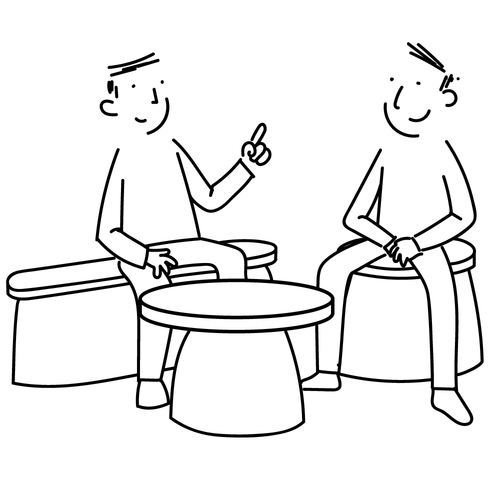
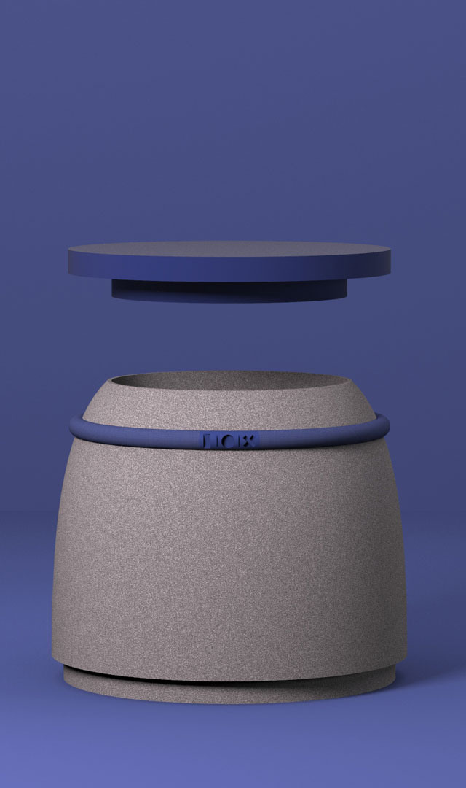
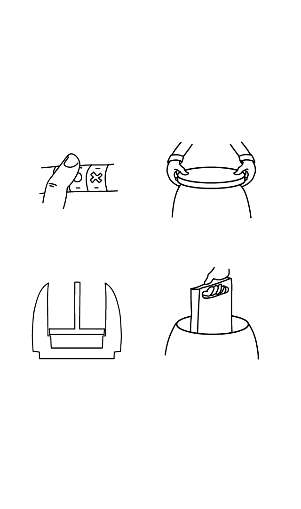
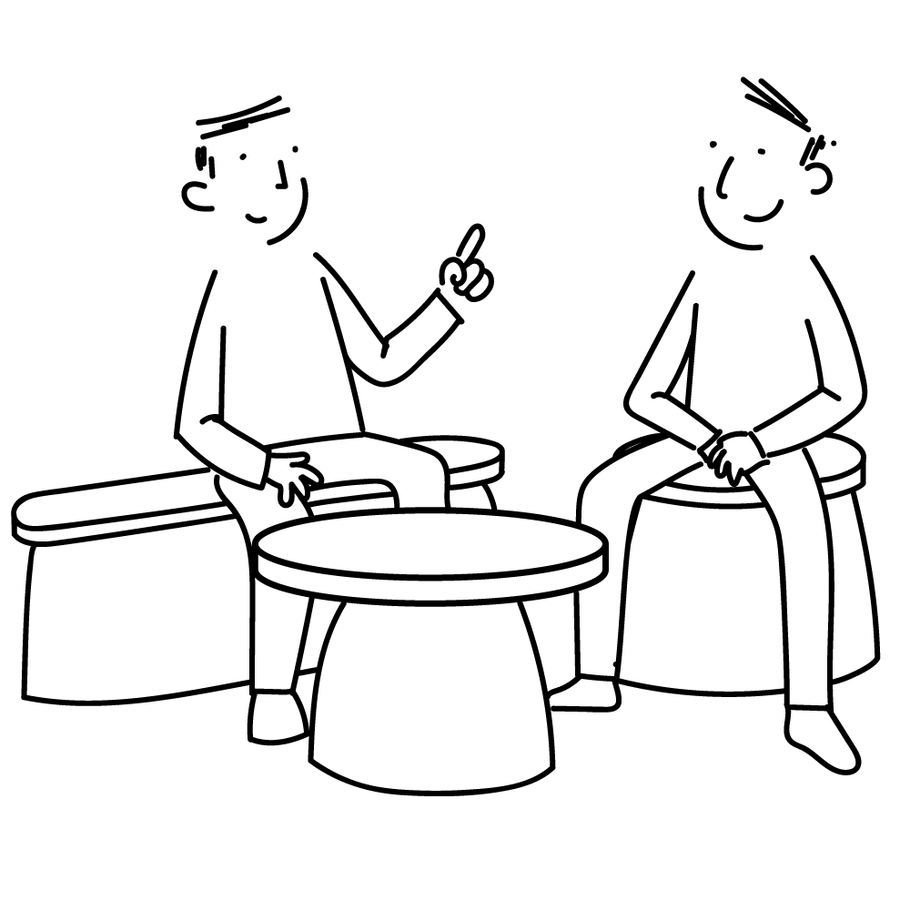
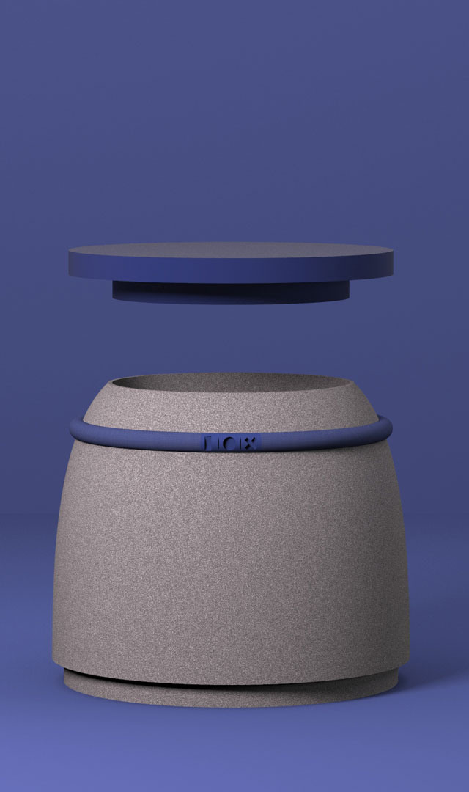
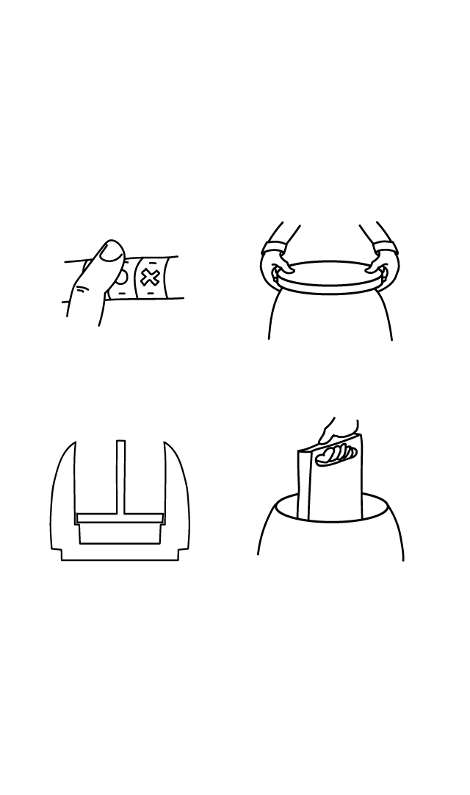

Pandore
Inspired by furniture with secret compartments, this range, composed of a stool, a bench and a coffee table, allows you to store your belongings at everyone's discretion. Each piece of furniture thus has a compartment within it which can be locked using an analog padlock. The latter becomes more discreet by the use of symbols instead of numbers and is inserted in a collar that goes around the furniture. It is then considered a decorative element at first glance.
 





Contact
ah!
fr